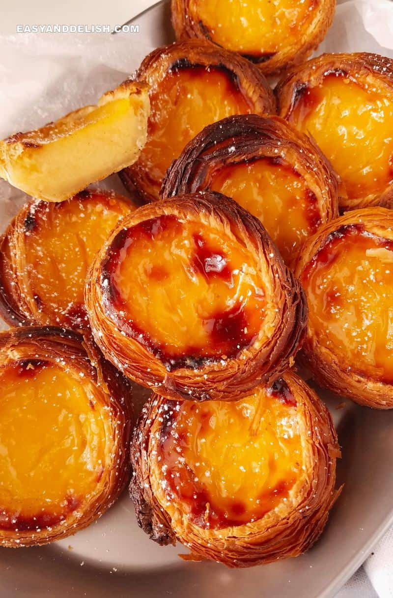

Portugese Egg Tart

Description
Portuguese Custard Tarts are a deliciously flaky dessert that migrated to Macau and became a local favorite. This custard tart recipe yields buttery, sweet tarts with an aromatic custard that gets baked until it's just scorched on top.
Ingredients
- 420 g homemade rough puff pastry (Note: you really should use our homemade puff pastry recipe to get an authentic tasting Macau Egg Tart. Store-bought puff pastry is just NOT the same!)
- ½ cup heavy cream (35% fat dairy cream, 118 ml)
- ½ cup sugar (granulated white sugar, 115 g)
- 1 ¼ cup whole milk (300 ml, 3.5% milk fat)
- 2 egg yolks
- 4 teaspoons cornstarch (11 g)
- 1¼ teaspoon vanilla extract
Steps
Making The Pastry Shells:
- Roll out the puff pastry into a 10x12 inch (25x30 cm) rectangle. From the 10-inch side, start rolling the pastry into a tight roll until you have a 10-inch long roll. Return the pastry to the freezer for 30 minutes to chill until firm.
- Cut the chilled pastry roll into 12 equal disks that weigh about 35 g each (cut the pastry in half twice, and then cut each of the remaining 4 pieces into 3 equal pieces to get a total of 12). You can also use a ruler for this purpose. Start with 6 pieces first, wrap the rest up, and put them back in the refrigerator or freezer to keep them chilled.
- On a very lightly floured surface, place each piece of dough so the swirls in the dough are facing up. Use a rolling pin to roll each piece into a flat disc about ¼ inch wider than the diameter of the tin and about 3/16 inches thick. Use flour sparingly when rolling out the discs. Using a pastry scraper or metal spatula to lift the discs will help keep them intact.
- Place each disk onto the bottom of each custard tart tin and press the dough onto the tin. When you spread the dough into the tart tin, form a lip that sits on top of the perimeter of the tin. This is crucial for preventing the custard from overflowing. Work quickly so your dough doesn’t heat up. Have some all-purpose flour on the table in case the dough sticks to your fingers, and as you press the dough against the bottom and the sides of the tin, try not to overwork it.
- Freeze the finished tart cups for at least 35 minutes or until frozen. You can make the pastry tins ahead of time and keep them frozen for up to 2 weeks.